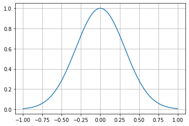
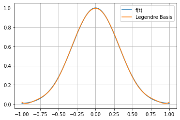
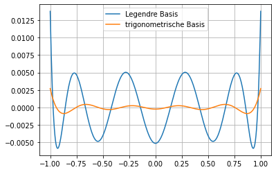

Beispiel zur Fourierentwicklung¶
import numpy as np
from sympy import symbols, integrate, lambdify, exp, sin, cos, pi
import scipy.integrate as scint
import matplotlib.pyplot as plt
Für das Beispiel benutzen wir zwei verschiedene orthonormale Basen für den \(L_2[-1,1]\)
t = symbols('t')
def dot(x,y):
return integrate(x*y,(t,-1,1))
def norm(x):
return dot(x,x)**(1/2)
def dotN(x,y):
xy = lambdify(t, x*y,'numpy')
return scint.quad(xy, -1, 1)[0]
def normN(x):
return dotN(x,x)**(1/2)
Legendre’sche Polynome¶
# Orthonormalbasis nach Schmidt
N = 9
yi = [t**i for i in range(N)]
xi = [yi[0]/norm(yi[0])]
for i in range(1,N):
s = 0
for j in range(i):
s += dot(yi[i],xi[j])*xi[j]
zi=yi[i]-s
xi.append(zi/norm(zi))
xi
[0.707106781186547,
1.22474487139159*t,
2.37170824512628*t**2 - 0.790569415042095,
4.67707173346743*t**3 - 2.80624304008046*t,
9.2807765030735*t**4 - 7.95495128834872*t**2 + 0.795495128834872,
18.4685120543048*t**5 - 20.5205689492276*t**3 + 4.39726477483448*t,
36.8085471137468*t**6 - 50.1934733369281*t**4 + 16.7311577789763*t**2 - 0.796721798998898,
73.4290553655431*t**7 - 118.616166359723*t**5 + 53.9164392544196*t**3 - 5.99071547271328*t,
146.570997825634*t**8 - 273.599195941123*t**6 + 157.845689965986*t**4 - 28.6992163574405*t**2 + 0.797200454372895]
f = exp(-5*t**2)
fn = lambdify(t, f, 'numpy')
tp = np.linspace(-1,1,400)
plt.plot(tp, fn(tp))
plt.grid()
plt.show()

alpha = [dotN(f, xii) for xii in xi]
alpha
[0.5596217150491691,
0.0,
-0.4411693576778274,
0.0,
0.2148123794839546,
0.0,
-0.07762200243541717,
0.0,
0.0221421344164393]
s = 0
for alphai, xii in zip(alpha,xi):
s += alphai*xii
sn = lambdify(t, s, 'numpy')
s
\[\displaystyle 3.24539473540683 t^{8} - 8.91522330646548 t^{6} + 9.38478407796753 t^{4} - 4.68931489413068 t^{2} + 0.994864373177097\]
tp = np.linspace(-1,1,400)
plt.plot(tp, fn(tp),label='f(t)')
plt.plot(tp, sn(tp),label='Legendre Basis')
plt.legend()
plt.grid()
plt.show()

Parsevallsche Gleichung (Vollständigkeitsrelation):
\[\sum_{k=1}^N |(x,x_k)|^2 \le \sum_{k=1}^\infty |(x,x_k)|^2 = \|x\|^2\]
np.sum(np.array(alpha)**2)-normN(f)**2
-2.810714668699532e-05
Trigonometrische Funktionen¶
# Orthonormalbasis nach Schmidt
yi = []
N = 5
yi.append(1/2)
for i in range(1,N):
yi.append(cos(pi*i*t))
yi.append(sin(pi*i*t))
print('Anzahl Basisfunktionen: '+str(len(yi)))
xi = [yi[0]/normN(yi[0])]
for i in range(1,2*N-1):
s = 0
for j in range(i):
s += dotN(yi[i],xi[j])*xi[j]
zi=yi[i]-s
xi.append(zi/normN(zi))
Anzahl Basisfunktionen: 9
xi
[0.7071067811865475,
1.0*cos(pi*t) - 9.81307786677359e-17,
1.0*sin(pi*t),
-1.22011185168313e-17*cos(pi*t) + 1.0*cos(2*pi*t) + 1.03037317601123e-16,
-9.90337261694782e-18*sin(pi*t) + 1.0*sin(2*pi*t),
1.23822596516741e-33*cos(pi*t) - 1.01484627287186e-16*cos(2*pi*t) + 1.0*cos(3*pi*t) - 1.58362563377161e-17,
2.04850984122971e-34*sin(pi*t) - 2.0684971882448e-17*sin(2*pi*t) + 1.0*sin(3*pi*t),
-4.42531299261824e-17*cos(pi*t) + 1.31330734865152e-16*cos(2*pi*t) + 8.86382073502645e-17*cos(3*pi*t) + 1.0*cos(4*pi*t) - 3.92523114670944e-17,
7.95881701368516e-17*sin(pi*t) - 1.53007052862912e-17*sin(2*pi*t) - 6.41357085318366e-17*sin(3*pi*t) + 1.0*sin(4*pi*t)]
alpha2 = [dotN(f, xii) for xii in xi]
alpha2
[0.5596217150491691,
0.4850805845912827,
0.0,
0.10914699708164807,
0.0,
0.010077740674845966,
0.0,
-0.00025517128989830523,
0.0]
s2 = 0
for alphai, xii in zip(alpha2,xi):
s2 += alphai*xii
s2n = lambdify(t, s2, 'numpy')
s2
\[\displaystyle 0.485080584591283 \cos{\left(\pi t \right)} + 0.109146997081648 \cos{\left(2 \pi t \right)} + 0.010077740674846 \cos{\left(3 \pi t \right)} - 0.000255171289898305 \cos{\left(4 \pi t \right)} + 0.395712309610513\]
tp = np.linspace(-1,1,400)
plt.plot(tp, fn(tp),label='f(t)')
plt.plot(tp, sn(tp),label='Legendre Basis')
plt.plot(tp, s2n(tp),label='trigonometrische Basis')
plt.legend()
plt.grid()
plt.show()

Parsevallsche Gleichung (Vollständigkeitsrelation):
\[\sum_{k=1}^N |(x,x_k)|^2 \le \sum_{k=1}^\infty |(x,x_k)|^2 = \|x\|^2\]
np.sum(np.array(alpha2)**2)-normN(f)**2
-4.505698535384184e-07
Vergleich¶
plt.plot(tp, sn(tp)-fn(tp),label='Legendre Basis')
plt.plot(tp, s2n(tp)-fn(tp),label='trigonometrische Basis')
plt.legend()
plt.grid()
plt.show()
